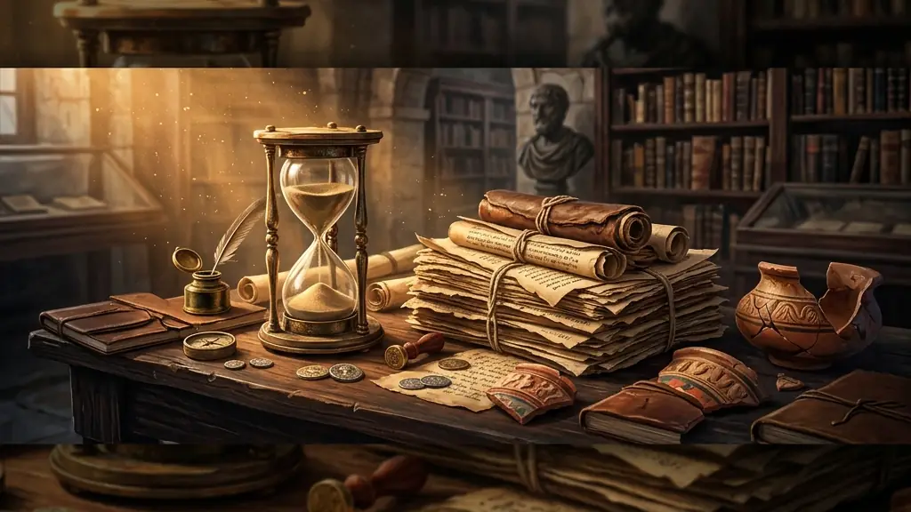
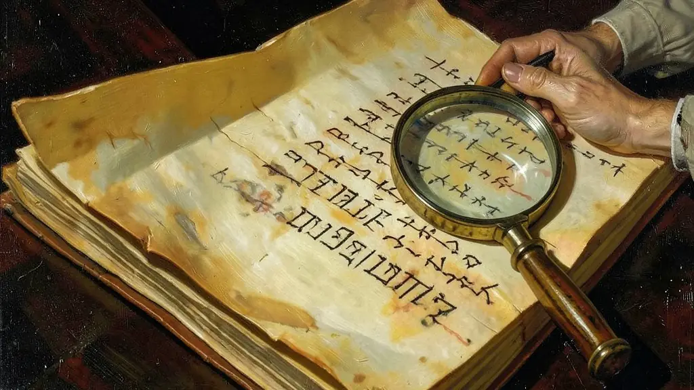

Capítulo 01
1. O Historiador: O Detetive do Passado
Marc Bloch, um grande historiador francês, comparava o seu ofício ao de um ogro da lenda: onde ele sente 'carne humana', ele sabe que ali está o seu campo de trabalho. O historiador não julga o passado com a moral de hoje (isso se chama Anacronismo), mas tenta entender por que as pessoas agiam daquela forma na época delas. Ele interroga as fontes para descobrir o que elas escondem e o que elas revelam deliberadamente sobre quem mandou escrevê-las.

Capítulo 02
2. Fontes Históricas: A Prova do Crime
Antigamente, só valia o que estava escrito no papel oficial. Hoje, uma marchinha de carnaval, um meme da internet ou um resto de cerâmica indígena são fontes tão importantes quanto a Constituição. Se não há fonte, não há história; há ficção. O historiador cruza as informações: ele compara o que o diário do soldado diz com o que o jornal da época noticiava para chegar o mais perto possível da realidade dos fatos.
Capítulo 03
3. O Tempo: Relógio vs Sociedade
Existe o tempo do relógio (cronológico), mas para a História o que importa é o **Tempo Histórico**. Às vezes, um século passa e quase nada muda no comportamento de um povo (permanência); outras vezes, em dez dias (como na Revolução Francesa ou Russa), o mundo vira de cabeça para baixo (ruptura). O historiador organiza esses tempos em Longa Duração (estruturas como o clima ou a religião) e Curta Duração (eventos curtos como uma eleição ou uma batalha).

Capítulo 04
4. Escolas de Pensamento: Quem Conta a História?
Se você ler um livro positivista, verá apenas nomes de reis. Se ler um livro marxista, verá revoltas de operários. A História depende do ponto de vista do historiador. A Escola dos Annales ensinou que devemos olhar para a 'Nova História': a história dos cheiros, do medo, da infância e da morte. Essa mudança de foco permitiu que grupos antes 'esquecidos' (negros, mulheres, indígenas) ganhassem voz e fossem reconhecidos como sujeitos da história brasileira.
Capítulo 05
5. Patrimônio e Memória: O Direito de Lembrar
Preservar um prédio antigo ou uma dança tradicional não é apenas 'cultura', é garantir que a nossa identidade não se apague. Quando um museu queima, perdemos um pedaço de nós mesmos. A Memória é seletiva (escolhemos o que lembrar), mas a História é uma ciência crítica que nos ajuda a entender por que certas memórias são impostas pelo Estado e outras são perseguidas. Estudar história é um ato de resistência contra o esquecimento forçado.
A História não é apenas o estudo do passado, mas, como definiu Marc Bloch, a 'ciência dos homens no tempo'. Diferente de uma simples crônica de eventos, a historiografia moderna busca compreender as estruturas sociais, as mentalidades e as transformações culturais que moldam a experiência humana. O historiador atua como um 'juiz de instrução' que interroga os vestígios do passado — documentos, imagens, tradições orais e cultura material — para reconstruir processos que dão sentido ao presente.
A Escola dos Annales, no século XX, revolucionou a disciplina ao propor a 'longa duração' e a interdisciplinaridade, integrando a geografia, a economia e a psicologia à análise histórica. Essa mudança de paradigma permitiu que sujeitos antes invisíveis, como mulheres, trabalhadores e populações escravizadas, passassem a ser protagonistas da narrativa histórica. A História deixa de ser a biografia dos 'grandes homens' para se tornar a análise das tensões e sínteses de sociedades inteiras.
Para o Enem, é fundamental compreender que o conhecimento histórico é uma construção datada e passível de revisão. O aluno deve ser capaz de identificar diferentes usos do passado e como a memória é disputada por diversos grupos sociais para legitimar projetos políticos no presente. O domínio da crítica documental e a percepção de que o tempo histórico é múltiplo e heterogêneo são competências centrais para interpretar as questões de Ciências Humanas com rigor e profundidade.
Fonte: BLOCH, Marc. Apologia da História ou o Ofício do Historiador. Rio de Janeiro: Jorge Zahar, 2001.
Atividades interativas
Questões para fixar
O conceito de 'Anacronismo' em História refere-se a qual erro metodológico cometido pelo pesquisador?
A Escola dos Annales, fundada no século XX, revolucionou a historiografia ao defender que:
Qual é o papel do historiador na investigação das ações humanas no tempo?
Qual é a característica principal da abordagem da Escola dos Annales na escrita da história?
Qual é o conceito que se refere à ideia de que a História é uma ferramenta de poder para construir identidades nacionais?